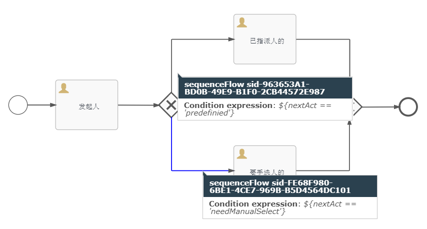
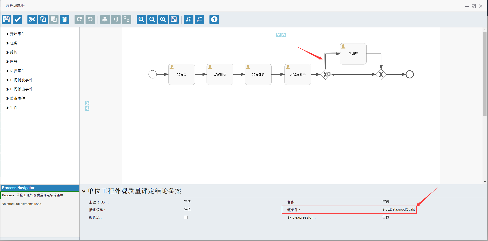
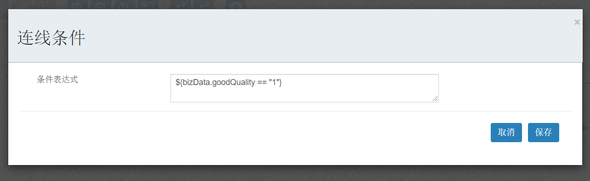
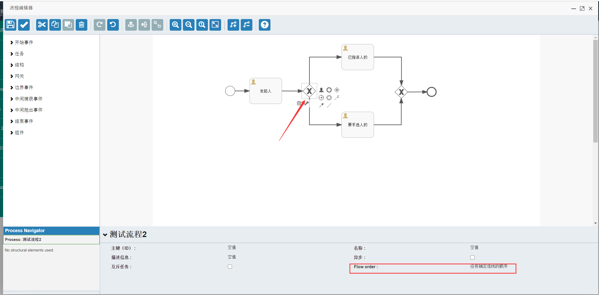
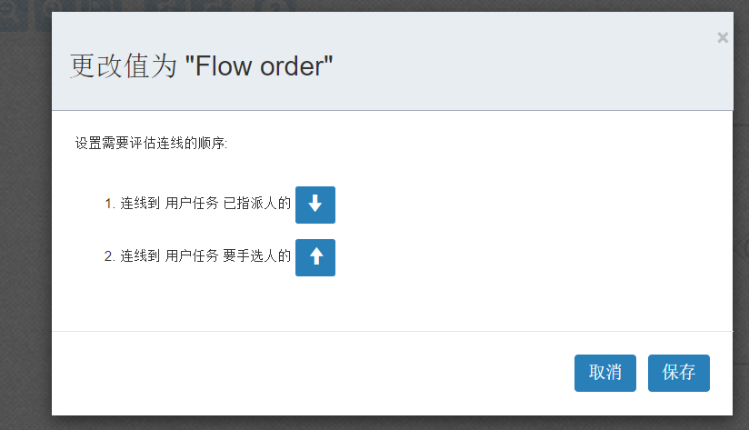

如下图所示：网关使用的是排它网关（菱形中间是叉）
节点“已指派人的”的id为"predefined"
节点“要手选人的”的id为"needManualSelect"
因此连接到“已指派人的”出线的表达式为 ${nextAct == 'predefined'}，同理将连接“要手选人的”的表达式为 ${nextAct == 'needManualSelect'}。

当流程需要根据条件走不同的路线时我们就需要用到网关，网关有三种：排它网关、兼容网关、并行网关。判断走哪条路的条件需要在网关的出线上配置表达式。
网关出线的表达式是Java的Juel表达式，详细语法参见Oracle官网资料
表达式在网关的出线上配置流表达式如下图所示：

如下图的Juel表达式的语义为优质工程的走这条出线。bizData是类型为Json的流程变量，goodQuality是一个属性表示优质工程，当值为1时表示真。
流程变量可以在启动流程和完成任务流程的Api传到流程平台。流程变量的生命周期是整个流程，后调用的接口传的同名流程变量将被覆盖。

排它网关顾名思义，只找到一条出线的网关。排它网关的逻辑是按照出线的顺序依次判断出线上的条件，找到满足的条件便停止并走这条出来，若没有满足条件的出线再查找有没有默认出线，有则走默认出线，否则抛出异常。
如下图排它网关的图标是菱形中间有个叉，这个图标是BPMN的规范。在下面的面板上有一个出线顺序的选项。

点开会弹出设置出线顺序的面板，在这个面板可以手动调整出线的顺序，上面的会优先判断。

兼容网关，找到所有满足条件出线的网关。兼容网关的逻辑是依次判断出线上的条件，找到所有满足条件的出来，若找到了有满足条件的出线则走这些出线，若没有满足条件的出线再查找有没有默认出线，有则走默认出线，否则抛出异常。兼容网关的图标是菱形中间有个圆。
兼容网关，走所有出线的网关。兼容网关的逻辑是找到并走所有出线，出线上的条件被忽略。并行网关的图标是菱形中间有个加号。